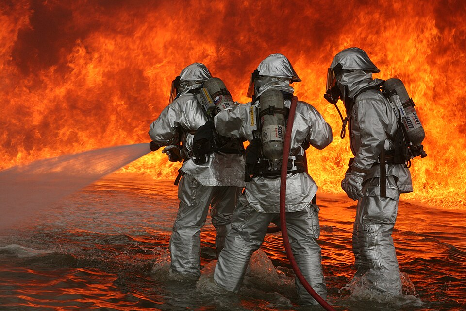

La segunda ley de Newton aplicada a un fluido que entra y sale de una caja
Si alguna vez sostuviste una manguera con el agua a toda presión, sentiste cómo tira. La manguera de los bomberos tira tanto que sujetarla es todo un desafío. ¿De dónde sale esa fuerza, si el agua solo está pasando? Sale de la segunda ley de Newton, aplicada a un fluido que entra y sale de una región: la fuerza es igual al ritmo con que cambia la cantidad de movimiento.
Para una partícula, la fuerza es igual a la variación de su cantidad de movimiento por unidad de tiempo. Para un fluido se usa el mismo principio, pero sobre un volumen de control: una caja imaginaria por la que el fluido entra y sale. Aplicando el teorema del transporte de Reynolds a la cantidad de movimiento, en un flujo estacionario queda que la suma de las fuerzas sobre el fluido de la caja es igual a la cantidad de movimiento que sale por segundo menos la que entra [1].
David Tong, de la Universidad de Cambridge, muestra que la ecuación de Euler, la que gobierna un fluido ideal, no es otra cosa que la conservación de la cantidad de movimiento escrita punto por punto [2].
La hoja de problemas de hidráulica de John Fenton resuelve el caso más simple: un chorro de agua que sale a 6 m/s por una boquilla de 645 mm² y choca de frente contra una placa quieta [3]. Si el agua, después del choque, se va por los costados, paralela a la placa, toda su cantidad de movimiento en la dirección del chorro se pierde, y la fuerza sobre la placa es ρU²A, unos 24,4 N (Fenton incluye un pequeño factor de corrección, el coeficiente de Boussinesq, de 1,05) [3]. Y si en cambio el agua rebota hacia atrás, sin perder velocidad, la cantidad de movimiento no solo se anula sino que se invierte, y la fuerza es el doble: 48,8 N [3].
La fuerza crece con el cuadrado de la velocidad. En otro problema de Fenton, un chorro de 50 mm de diámetro a 18 m/s le hace a una placa una fuerza de unos 668 N [3].
Las pelotitas contra la pared: tirá pelotitas de goma contra una pared. Si se quedan pegadas, la pared tiene que frenarlas. Si rebotan, la pared tiene que frenarlas y además devolverlas: hace el doble de fuerza. Un chorro de agua es una lluvia continua de «pelotitas» de fluido, y por eso la placa siente la diferencia según el agua se escurra o rebote.
Fenton también resuelve el caso de una manguera de bomberos de 100 mm de diámetro, con una boquilla que angosta el chorro a 50 mm y un caudal de 20 litros por segundo [3]. Al angostarse, el agua acelera, como dice la ecuación de continuidad, y para acelerarla hace falta una fuerza. Juntando la cantidad de movimiento con la presión del agua dentro de la manguera, la fuerza sobre la boquilla resulta de unos 315 N [3].
Fenton lo pone en perspectiva: es casi la mitad del peso de una persona de 80 kg. La boquilla tiende a tirar de la manguera para enderezarla y, si nada la sujeta, la tienen que sujetar los bomberos [3].

Del chorro al avión: la misma cuenta explica cómo empuja un motor a reacción o una hélice: el aire sale con más cantidad de movimiento que la que entra, y la reacción empuja al motor hacia adelante. El libro de Genick Bar-Meir dedica una sección a la hélice y a la propulsión a chorro con esta idea [4].
Un chorro hace fuerza porque cambia de cantidad de movimiento al chocar o al acelerarse. La cuenta es la segunda ley de Newton aplicada a una caja por la que el fluido pasa: la fuerza es lo que sale por segundo menos lo que entra. Por eso un chorro que rebota empuja el doble que uno que se escurre, y por eso una manguera de bomberos tira con casi medio peso de una persona.
Pregunta para la comunidad: Si duplicás la velocidad del chorro sin cambiar el diámetro de la boquilla, ¿cuánto aumenta la fuerza sobre la placa? Pista: al duplicar la velocidad también se duplica el caudal.